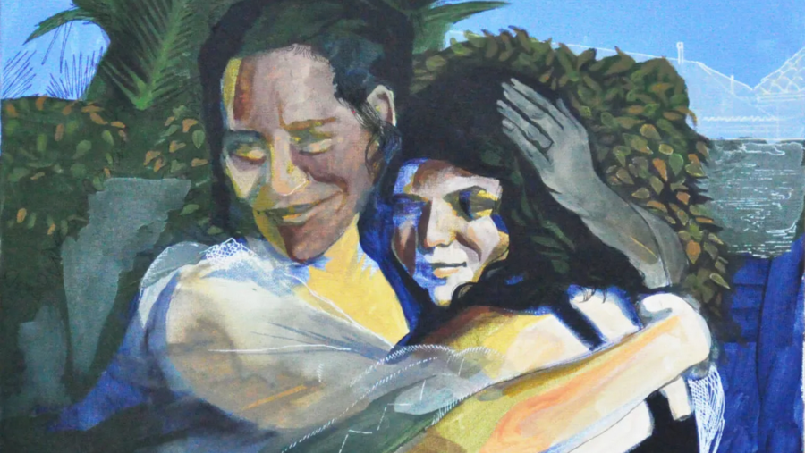

Noelle Garcia: Listen to Me
Noelle Garcia is telling us to listen.
I know, everyone is telling us to listen, right? Our professors, our bosses, our kids, our parents… social media demands our attention, colonizing every second that our eyeballs will give.
But what Noelle knows is from time beyond memory*.
She has in her bones some of the best ideas, ideas that sustained a people for countless generations. Ideas from the Klamath people that were so successful, they were murdered by White logging opportunists. Ideas from Paiute people that were nearly extinguished through family separation, boarding schools, and death.
Noelle knows the fury of being asked over and over for these big ideas by institutions with too small ears.
Noelle knows that we need joy to sustain us. She knows that through laughter, one can deliver the truth in a uniquely effective package.
These are the ideas that have survived against all odds and are presented to us now.
Will we listen? * Full quote: “We have lived in the Klamath Basin of Oregon, from time beyond memory.” from klamathtribes.org